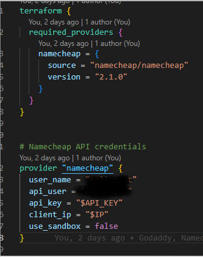

Onboarding Custom Domains, DNS and Mail Records for O365 tenants
On my first phishing engagement/attempt it was up to me to figure it all out.
I couldn't land anywhere and I almost got my home IP banned by Spamhaus.
I ended up buying an expired domain through expireddomains.net with good rating and a lot of backlinks.
I grabbed some Office licenses and started the tedious process of setting up records.
I wanted to help out with that ( and never ever have to do it again ) and it seemed like a perfect project for terraform.
I ended up writing a powershell helper script to handle the changes in O365 and terraform updates the DNS in either GoDaddy, Namecheap or DigitalOcean.
I will add AWS and Azure at some point.
I say, I say.
Through amazing blogs by Steve Borosh's 'Spoofing Microsoft 365 Like It's 1995',
Bobby Cook's 'The Art of the Device Code Phish',
and 'Long Live DMARC - Email Spoof issues' by Intruder at redteamcafe,
I set up all the SPF and DKIM records which got my mail rating to a 9.5 on https://mail-tester.com.
I emailed my contact at the organization and verified it's delivery.
It was tedious and boring.
I started thinking of ways to automate it and this what I came up with. Let's look at what we're up against:
Exchange Online Protection flow from Steve's article
Intruder's breakdown of SPF and DKIM
Here's the project structure, we're going to use Terraform and Powershell
Helper Script
Each template has a helper script AzNameCheap.ps1, AzGoDaddy.ps1, AzDigitalOcean.ps1 that takes a domain as a parameter. This is run in the same folder as the terraform project, it will run terraform for you.
It will install and import the modules you need, get your admin creds for the tenant and create the domain.
Then it runs a plan and waits for you to confirm before applying the changes.
Once changes are made and the records are live, the DKIM Signing is enabled.
Go into the portal and check to make sure the custom domain is verified in Azure AD under 'custom domains' and in O365. Then check https://security.microsoft.com/dkim and verify them there as well.
May as well check your providers dashboard as well to verify everything got where it was supposed to. Terraform is pretty good about minding it's own shop but best practice is good practice.
 Powershell to deploy Terraform
Powershell to deploy Terraform
Providers.tf
Here's our providers file, this is where you tell terraform what provider you want to use.
Terraform supports a bunch of non-cloud APIs as well, for example I've used it to spin up VMs on Proxmox.
You can find third party providers or use hashicorp's which give you the documentation with examples.
There are better ways to do this where you don't enter your actual API keys in the project files using Vault.
We should learn that next. Those variables won't work, those are just for me to you so you know what goes where.
These values come from your DNS providers dashboard where you'll create your API keys.

Namecheap requires an IP Address and API key
Main.tf
Main.tf, the main part of the project, unsurprisingly. We define some variables up top for the domain name and incidentals like GoDaddy's customer Id.
Each provider has their own way of doing things that are slightly different.
Some people put these in their own variables file but I like being able to look at it in the same file since we're not doing anything too complicated.
Notice domain has a "-" so "-com" rather than ".com".
These values come from your tenant. The customer Id is a godaddy thing only and isn't required for everyone, but the tenant suffix / onmirosoft domain and the verification record come from the AzureAD tenant you're phishing from.
I added the protection ones as variables as well, even though the structure doesn’t change, this let's me loook back at this later and know what's important. Run the powershell script attached to each template, it will givve you the value you need for "verification_record"
Replace with your values
DNS and SPF Records
DNS Records to be created. We have our verification record, the SPF record and the MX protection record.
Sender Policy Framework (SPF) is an email authentication technique used to prevent email spoofing and spam by validating the origin of an email message. It works by allowing domain owners to specify which mail servers are authorized to send emails on their behalf. This information is published as a DNS record, known as an SPF record. When an email is received, the recipient's mail server checks the sending server's IP address against the authorized servers listed in the domain's SPF record. If the sending server is found in the list, the email is considered legitimate; otherwise, it may be marked as spam or rejected.
If you are going to use something like GoPhish you may want to add a SPF record for that public IP, as well, but that's way outside the scope of this post (and something I haven't done yet).
GoDaddy example
DKIM CNAMES and enterprise endpoints make up the rest of the project. We'll look at each a little closer.
DKIM uses CNAME Records
This is where we set up DKIM for the domain.
DomainKeys Identified Mail (DKIM) is an email authentication method designed to improve email security and help prevent email spoofing, phishing, and spam.
It enables the sender to cryptographically sign an email message using a private key, which is then verified by the recipient using a public key published in the sender's Domain Name System (DNS) record.
By validating the signature, the recipient can confirm that the email has not been tampered with during transit and that it genuinely originates from the claimed domain.
This process helps to establish trust and credibility in email communications, ensuring the integrity of the email ecosystem. We set the records here with the variables from above.
DKIM uses CNAME Records
Enterprise enrollment records just to look like every other O365 org:
O365 Enterprise enrollment
Kick it off with the powershell script and enjoy about 3 hours of your time back. If it sucks or it breaks, let me know please.